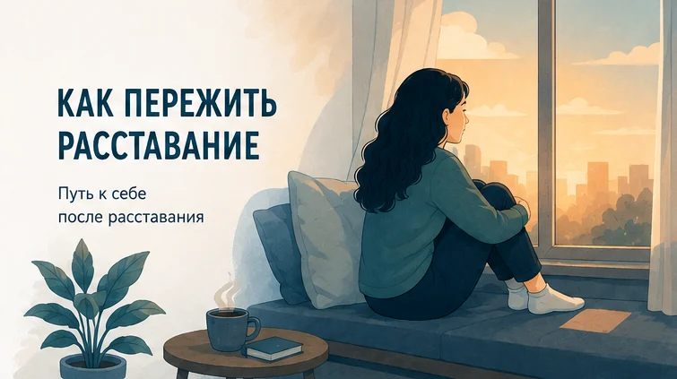
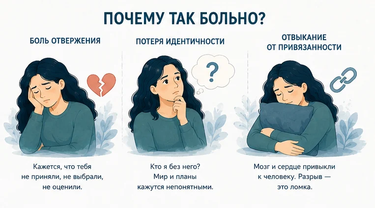
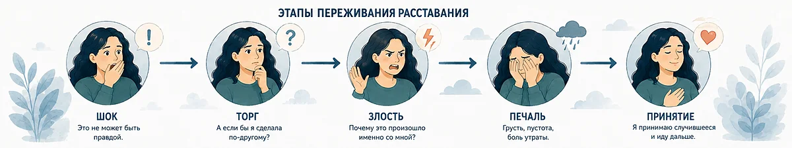
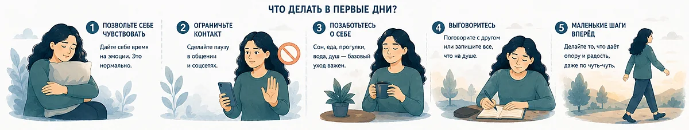
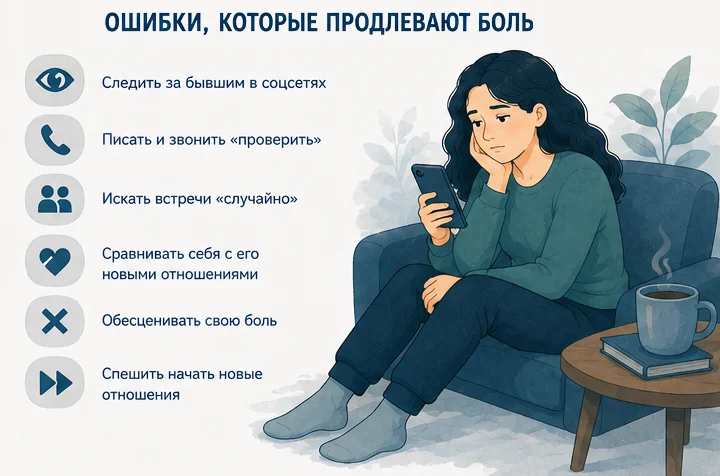
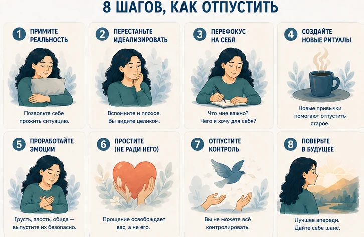
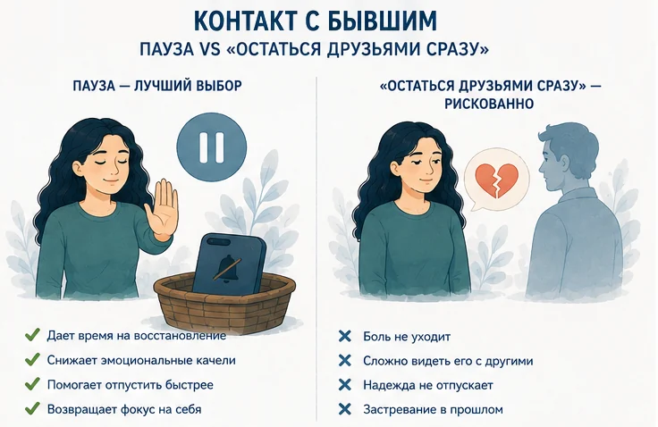
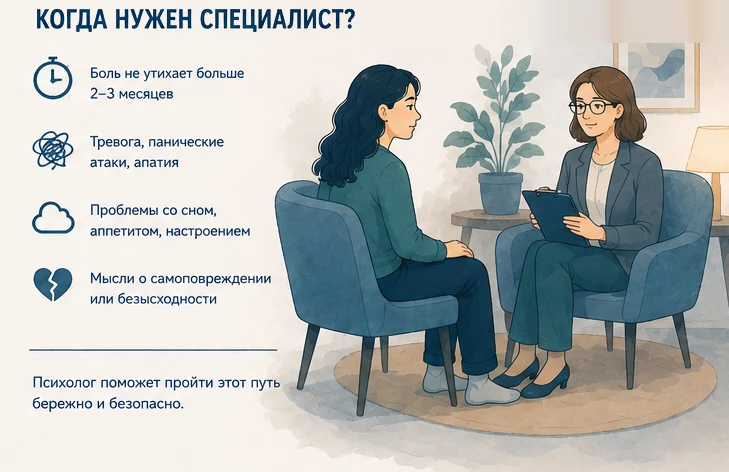

Главная → Блог → Как пережить расставание
Как пережить расставание и отпустить человека: 8 шагов
Обновлено: 21.08.2026 · 14 минут чтения

Расставание — это не «просто разрыв отношений», а настоящая потеря, и мозг переживает её почти как физическую травму. Чтобы пережить расставание, нужно не заставлять себя забыть, а дать себе горевать, прекратить контакт с бывшим партнёром хотя бы на несколько месяцев, вернуть в жизнь базовые опоры — сон, еду, движение, людей — и заново собрать ответ на вопрос «кто я без него». Боль в этом процессе не враг, а часть заживления: её задача — закончиться, и она закончится.
Если сейчас кажется, что эта боль никогда не пройдёт, — так думает почти каждый в первые недели. Психика восстанавливается лучше, чем кажется изнутри: то, что сегодня выглядит концом жизни, через несколько месяцев становится главой вашей истории.
Расставание — это утрата значимых отношений, которая переживается как горе: с шоком, отрицанием, злостью, печалью и постепенным принятием. Именно поэтому советы «просто забудь» не работают: горе не отменяют, его проживают.
- Боль проходит. Отвержение задевает те же зоны мозга, что и физическая боль, — вы не «слабый».
- Острая фаза — недели, возвращение к себе — месяцы. Это нормальный срок, а не ваша медлительность.
- Контакт с бывшим лучше прекратить хотя бы на 2–3 месяца, соцсети — убрать из доступа.
- Восстановите режим: сон, еда, движение, люди. Без этого не работает ничего остальное.
- Не идеализируйте прошлое и не заглушайте боль алкоголем или новыми отношениями.
- К психологу — если через 2–3 месяца легче не становится или пропадает желание жить.
- Почему после расставания так больно
- Почему не получается отпустить человека
- Этапы расставания и сколько длится боль
- Через сколько станет легче: таймлайн
- Что делать в первые дни
- Ошибки, которые продлевают боль
- Как пережить расставание: 8 шагов
- Общаться или не общаться с бывшим
- Мифы о расставаниях
- Как вернуться к себе в долгую
- Когда нужен специалист
- Частые вопросы
Почему после расставания так больно
Первое, что стоит знать: с вами всё в порядке. Сила боли после разрыва не говорит о вашей слабости — она говорит о том, как устроена привязанность.
Мозг воспринимает отвержение как боль
В исследовании Итана Кросса и коллег (2011) людям, недавно пережившим нежеланное расставание, показывали фотографию бывшего партнёра и просили вспомнить момент разрыва. Мозг реагировал активацией тех же областей, которые включаются при физической боли. Выражение «мне больно» после расставания — не метафора, а довольно точное описание происходящего.
Вы теряете не только человека
Вместе с партнёром уходит целый мир: общие планы, привычный вечер пятницы, друзья, роль «мы», представление о будущем. Психологи Эрика Слоттер, Венди Гарднер и Илай Финкель показали, что после разрыва у людей падает ясность представления о себе — становится трудно ответить, кто вы теперь и какой вы. Именно эта потеря ясности, а не только тоска по человеку, предсказывает силу страданий.
Пары буквально «достраивают» друг друга: два человека со временем становятся частью самоопределения друг друга. Поэтому разрыв ощущается не только как потеря партнёра, но и как потеря куска себя. По мотивам исследования Э. Слоттер, В. Гарднер, И. Финкеля (2010)
Отвыкание похоже на отмену привычки
Близкий человек был источником регулярного успокоения: сообщение утром, объятие вечером. Когда источник исчезает, организм требует его назад — отсюда тяга написать, проверить страницу, «просто спросить, как дела». Это не любовь зовёт вас обратно, это система привязанности ищет привычный способ успокоиться. Понимание разницы очень помогает не сорваться.

Почему не получается отпустить человека
«Умом всё понимаю, а отпустить не могу» — самая частая фраза после разрыва. Дело не в силе воли: удерживают вполне конкретные механизмы.
- Незакрытый вопрос. Пока нет ответа «почему», психика не может закрыть историю и продолжает крутить её по кругу. Иногда честного ответа нет ни у кого, включая бывшего партнёра.
- Надежда. Пока сохраняется хоть намёк на возвращение — переписка, лайк, «останемся друзьями» — горевание не начинается. Организм ждёт, а не заживает.
- Идеализация. Память бережно хранит лучшие вечера и стирает то, из-за чего вы плакали. Вы скучаете не по реальному человеку, а по отредактированной версии.
- Привычка. Забыть бывшего мешает не любовь, а сотни бытовых сцеплений: маршрут, музыка, чашка, вечер пятницы. Их приходится расцеплять по одному.
- Страх, что «такого больше не будет». Он говорит о вашей потребности в близости, а не о том, что этот человек был единственно возможным.
- Качели. Если в отношениях хорошее чередовалось с холодом и обвинениями, привязанность обычно оказывается сильнее, а не слабее — так работает непредсказуемое подкрепление. Об этом механизме подробно — в статье про токсичные отношения.
Отпустить любимого человека — не значит перестать его любить по команде. Это значит перестать строить на нём свою жизнь: убрать ожидание, вернуть себе внимание и позволить чувствам угаснуть естественно. Отпустить бывшего мужа или бывшую жену бывает труднее, чем партнёра по свиданиям, — там больше общего быта, документов и общих людей, и расцеплять приходится дольше. Механика при этом та же.
Этапы расставания и сколько длится боль
Проживание разрыва похоже на горевание, но проходит не по прямой. Люди обычно движутся не «по ступеням», а зигзагом: сегодня спокойно, завтра снова накрывает. Это нормальный ход, а не откат назад.

| Этап | Что вы чувствуете | Что помогает |
|---|---|---|
| Шок | Оцепенение, «этого не может быть», трудно есть и спать | Базовый уход за собой, присутствие близких, никаких больших решений |
| Торг и надежда | «Если я изменюсь, мы сойдёмся», бесконечный анализ переписок | Пауза в контакте, письменная фиксация реальных причин разрыва |
| Злость и обида | Гнев на партнёра или на себя, обвинения, несправедливость | Выражать злость безопасно: спорт, дневник, разговор — не мстительные сообщения |
| Печаль | Тоска, пустота, потеря интереса — самая «тяжёлая», но целительная фаза | Разрешить себе грустить, не убегать в работу и алкоголь |
| Принятие | Воспоминания уже не жгут, появляются планы и интерес к жизни | Новые роли и цели, возвращение своей идентичности |
Через сколько станет легче: таймлайн
Точную дату не назовёт никто: сроки зависят от длительности отношений, от того, насколько переплелись быт и планы, и от поддержки вокруг. Но общая динамика у большинства людей похожа — вот ориентир, чтобы понимать, что происходящее с вами нормально.
- Первая неделяШок и оцепенение. Трудно есть и спать, мысли скачут, кажется, что это происходит не с вами. Задача одна: дожить до вечера, поесть, поспать, никого не спасать и ничего не решать.
- 2–3 неделиПик боли. Появляется навязчивое желание написать, «поговорить и всё исправить». Обычно именно здесь совершаются главные ошибки — просмотры страниц, ночные сообщения, попытки вернуть.
- 1 месяцБоль ещё сильная, но становится волнами: несколько спокойных часов сменяются накатом. Появляются первые «нормальные» вечера — за них не нужно чувствовать вину.
- 3 месяцаПлохих дней заметно меньше, чем хороших. Возвращается интерес к делам и людям. Воспоминания всё ещё колют, но уже не выбивают из строя на весь день.
- 6 месяцевЖизнь снова становится своей: свои планы, свои вечера, новые привычки. Мысли о бывшем приходят реже и без прежней остроты.
- ГодУ большинства воспоминания уже не жгут. Отношения становятся частью истории, к которой можно возвращаться без боли — и из которой вы вынесли что-то о себе.
Ориентир простой: важна не скорость, а направление. Сравнивайте себя не со вчерашним днём, а с прошлым месяцем — если плохих дней становится чуть меньше, процесс идёт правильно. Если же за 2–3 месяца не легчает совсем, это повод показаться специалисту.
Что делать в первые дни
Если разрыв случился только что, задача не «пережить всё», а прожить ближайшие сутки. Вот минимум.

- Позвольте себе чувствовать. Дайте себе время на эмоции — это нормально. Плакать, злиться, скучать не стыдно: подавленное горе не исчезает, а уходит в бессонницу и раздражительность. Помогает называть чувства словами: «мне страшно остаться одному», «я злюсь», «мне стыдно» — точное имя ощутимо снижает силу переживания.
- Ограничьте контакт. Сделайте паузу в общении и соцсетях: отпишитесь или скройте страницы, уберите вещи и фотографии в коробку (не обязательно выбрасывать — достаточно убрать с глаз). Каждый случайный «привет» от прошлого перезапускает боль.
- Позаботьтесь о себе. Сон, еда, прогулки, вода, душ — базовый уход важен. Звучит банально, но именно в этом порядке возвращается способность думать. Если сон рассыпался, помогут приёмы из статьи про бессонницу при тревоге.
- Выговоритесь. Поговорите с другом или запишите всё, что на душе. Не ради советов — просто чтобы вас услышали. Изоляция усиливает боль сильнее всего остального.
- Делайте маленькие шаги вперёд. То, что даёт опору и радость, даже понемногу: прогулка, душ, один звонок, один рабочий час. И не принимайте пока больших решений — уволиться, переехать, написать «давай попробуем ещё раз»: то, что решено в шоке, потом приходится расхлёбывать.
Ошибки, которые продлевают боль

- Следить за бывшим в соцсетях. Каждый заход — как расчёсывать заживающую рану, и рана не закрывается.
- Писать и звонить «просто проверить». Повод всегда найдётся, но цель одна — получить дозу контакта. Облегчение длится час, откат — несколько дней.
- Искать встречи «случайно». Проходить мимо его дома, приходить в общие компании ради одной встречи. Это удерживает вас в роли ожидающего.
- Сравнивать себя с его новыми отношениями. Вы сравниваете свою изнанку с чужой витриной — этот счёт всегда будет не в вашу пользу.
- Обесценивать свою боль. «Прошло уже два месяца, хватит ныть». Горе не ускоряется от давления, зато прекрасно уходит вглубь и растягивается.
- Пытаться «вернуть», пока больно. Возвращение из страха одиночества почти всегда приводит ко второму, более тяжёлому разрыву.
- Обезболивать алкоголем и случайными связями. Приглушает на вечер, усиливает тоску и тревогу назавтра.
- Обвинять во всём себя. «Я недостаточно хорош» — самый частый и самый разрушительный вывод. Расставание говорит о несовпадении двух людей, а не о вашей ценности. Если этот голос звучит громко, поможет статья про самооценку.
- Спешить начать новые отношения. Непрожитая боль всё равно догонит — и почти всегда на новом человеке.
- Заваливать себя работой. Работа помогает не думать, но не помогает прожить. Через несколько месяцев такой стратегии обычно приходит выгорание.
Часто человеку нужно не столько советов, сколько выговориться — а среди ночи, когда накрывает сильнее всего, рядом обычно никого нет. Тогда помогает просто проговорить это вслух: боль теряет часть силы, когда её называют словами.
Если говорить об этом с близкими пока тяжело, можно проговорить всё с ИИ-психологом — тепло, анонимно, в любое время суток. Он не осудит и не расскажет общим друзьям.
Начать разговор бесплатноКак пережить расставание: 8 шагов
Это не «программа на 8 дней», а рычаги, которые действительно влияют на скорость восстановления. Возьмите те, что откликаются.

-
Примите реальность.
Позвольте себе прожить ситуацию, а не отменить её. Пока вы ждёте, что он передумает, каждый день начинается с проверки телефона и заканчивается разочарованием. Признать «этих отношений больше нет» больно, но именно с этого признания начинается заживление — вместе с правом плакать, злиться и скучать столько, сколько нужно.
-
Перестаньте идеализировать.
Память после разрыва работает нечестно: она подсвечивает лучшие моменты и стирает то, из-за чего вы страдали. Выпишите на бумагу конкретные вещи, которые вам не подходили: как вы себя чувствовали рядом, что терпели, чего не получали. Перечитывайте этот список, когда тянет написать первым. Это не про «очернить человека», а про то, чтобы видеть отношения целиком.
-
Перефокусируйтесь на себя.
Задайте себе два вопроса: что мне важно и чего я хочу для себя. И верните телу режим — сон в одно и то же время, регулярная еда, прогулки, любое движение. Тело фундамент психики: на недосыпе любая мысль звучит в три раза страшнее. Прогулка на 30 минут реально снижает тревогу; если она сильная, посмотрите статью как справиться с тревогой.
-
Создайте новые ритуалы.
После отношений остаются пустые слоты: вечера, выходные, планы на отпуск. Пока они пусты, их заполняет тоска. Новые привычки помогают отпустить старое: свой завтрак, свой маршрут, спорт по вторникам, встречи с друзьями по субботам. Не ждите вдохновения — просто внесите это в календарь заранее.
-
Проработайте эмоции.
Грусть, злость, обида — выпустите их безопасно: дневник, спорт, разговор с близким или психологом. Опасно не чувствовать злость, а сливать её в мстительные сообщения или держать в себе годами. И помните: одиночество после разрыва обманывает — кажется, что вы всем в тягость, хотя живой контакт с людьми делает для восстановления больше, чем любые внутренние уговоры.
-
Простите — не ради него.
Прощение освобождает вас, а не его. Речь не о том, чтобы одобрить то, что случилось, а о том, чтобы перестать носить обиду каждый день. И себя тоже простите: за то, что не увидели раньше, что терпели, что любили. Важно не торопить этот шаг — прощение приходит как результат прожитого горя, а не как задание на утро вторника.
-
Отпустите контроль.
Вы не можете контролировать всё: ни его чувства, ни его новую жизнь, ни ответ на вопрос «в какой момент всё сломалось». Бесконечный разбор переписок ощущается как поиск истины, но работает как жвачка для мозга: боль возвращается, ответа нет. Если голова крутит одно и то же, помогут техники из статьи про навязчивые мысли: отведите руминации ограниченное время в день и мягко возвращайте внимание, когда они приходят вне расписания.
-
Поверьте в будущее.
Самый долгий шаг: заново собрать ответ на вопрос «кто я» вне «мы». Что я люблю, во что верю, чего хочу. Возвращайте то, от чего отказались в отношениях, пробуйте новое, разрешайте себе быть отдельным человеком. Именно возвращение ясного представления о себе отличает тех, кто выходит из расставания сильнее, чем вошёл.
Общаться или не общаться с бывшим
Это самый частый вопрос — и самый частый источник затянувшихся страданий. Короткий ответ: сначала пауза, потом решайте.

| Что происходит | Кому подходит | |
|---|---|---|
| Полная пауза (2–3 месяца) | Боль проходит быстрее: рана не открывается заново, чувства успокаиваются | Почти всем сразу после разрыва — это база |
| «Остаться друзьями» сразу | Надежда тлеет, каждое сообщение перезапускает цикл боли, восстановление растягивается на годы | Практически никому, пока чувства живы |
| Деловой контакт по необходимости | Общение только по делу: квартира, вещи, ребёнок. Коротко, спокойно, лучше письменно | Тем, у кого есть общий быт или дети |
| Дружба через полгода-год | Возможна, если вы оба спокойны и никто не ждёт продолжения | Тем, кто уже прожил горе. Это не обязательство |
Отдельно про соцсети: скрытые просмотры страницы бывшего — самая коварная привычка. Каждая новая фотография заставляет вас достраивать чужую жизнь и сравнивать её со своей худшей версией. Отписка — не про обиду, а про гигиену собственной головы.
Мифы о расставаниях
Миф 1. Клин клином вышибают
Новый роман на фоне свежей боли — это анестезия, а не лечение. Непрожитая потеря никуда не девается: она проявится в ревности, недоверии или внезапном охлаждении к новому человеку. Признак готовности простой: вы хотите этого человека, а не хотите перестать чувствовать боль.
Миф 2. Время лечит само
Время лечит, только если вы не мешаете. Если каждый вечер вы проверяете его страницу, переписываетесь «по-дружески» и перечитываете старые сообщения, то год спустя окажетесь примерно там же, где были. Лечит не время, а то, что вы в этом времени делаете.
Миф 3. Сильные люди не страдают из-за расставаний
Страдают все, у кого была привязанность. Это биология, а не характер. Сила проявляется не в отсутствии боли, а в том, что вы продолжаете заботиться о себе, пока больно.
Миф 4. Если очень больно — значит, это была большая любовь
Не обязательно. Часто сильнее всего болят как раз нестабильные отношения: там, где было много тревоги, надежды и непредсказуемости, привязанность держит крепче. Сила боли говорит о степени привязанности, а не о качестве отношений и не о том, что вам нужно вернуться.
Как вернуться к себе в долгую
Через несколько месяцев острая боль стихает, и появляется главная задача: не просто «забыть», а собрать жизнь, в которой вам хорошо одному. Это то, что защищает от повторения сценария.
- Верните «своё». Вспомните, от чего вы отказались ради отношений — музыка, друзья, спорт, поездки, профессия — и начните возвращать по одному.
- Стройте структуру. Расписание, регулярные встречи, спорт по вторникам. Структура держит, когда мотивации нет.
- Пересоберите смысл. Не «за что мне это», а «что я о себе понял». Какие потребности были не закрыты? Где вы молчали, когда стоило говорить? Что вы теперь точно не готовы терпеть?
- Сформулируйте границы на будущее. Три пункта, которые вы больше не будете игнорировать: неуважение, обесценивание, отсутствие честности — у каждого свой список.
- Не торопитесь прощать. Прощение — это результат, а не задача на утро вторника. Оно приходит само, когда боль отпускает; заставлять себя «отпустить и простить» раньше времени бесполезно.
Со временем воспоминания перестают жечь. Они не исчезают — они становятся частью вашей истории, к которой можно возвращаться без боли. Это и есть завершение.
Когда нужен специалист
Обычное горе после разрыва постепенно слабеет. Стоит обратиться к психологу или врачу, если:

- прошло два-три месяца, а легче не становится совсем;
- вы не можете работать, есть, спать, выходить к людям;
- пропала радость от всего, что раньше нравилось, и это длится больше двух недель;
- вы пьёте или употребляете что-то, чтобы не чувствовать;
- вы преследуете бывшего партнёра, не можете остановиться, ищете встреч против его воли;
- в отношениях было насилие — физическое, сексуальное или психологическое;
- появляются мысли о том, что не хочется жить.
Затяжное горе, депрессия и тревожные расстройства хорошо лечатся, и обращение за помощью — не признак слабости, а самый короткий путь. Если есть мысли о суициде, помощь нужна немедленно.
Проговорить, что вы чувствуете, — уже половина работы. ИИ-психолог выслушает в любое время, поможет разложить мысли и найти опору. Первые сообщения — бесплатно.
Поговорить сейчасЧастые вопросы
Сколько времени нужно, чтобы пережить расставание?
Универсального срока нет: обычно самая острая боль держится несколько недель, а на то, чтобы жизнь снова стала своей, уходит от нескольких месяцев до года. Длительность зависит от того, сколько вы были вместе, насколько переплелись быт и планы, и есть ли у вас поддержка. Ориентируйтесь не на календарь, а на динамику: если с каждым месяцем плохих дней становится чуть меньше, процесс идёт правильно.
Как перестать думать о бывшем человеке?
Не пытайтесь запретить себе мысли — от запрета они становятся навязчивее. Вместо этого уберите то, что их подпитывает: скрытые просмотры страниц, переписку, вещи на видном месте. Выделите мыслям место — например, 15 минут в день, когда вы честно всё вспоминаете, а в остальное время мягко возвращаете внимание к делу. Со временем частота мыслей падает сама.
Стоит ли остаться друзьями после расставания?
Сразу — почти никогда. Дружба требует ровного отношения, а пока чувства живы, каждое общение снова запускает надежду и боль. Дайте себе несколько месяцев паузы без контакта. Если через полгода-год общение будет спокойным и не будет тянуть вас назад, дружба возможна — но она не обязательна, и отказ от неё не делает вас плохим человеком.
Почему мне больно, хотя я сам решил расстаться?
Потому что вы теряете не только человека, но и привычную жизнь: планы, общих друзей, ощущение «мы». Решение может быть правильным и всё равно болезненным — это не признак ошибки. Инициатор часто чувствует ещё и вину, из-за чего запрещает себе горевать. Разрешите себе грусть: она означает, что отношения были важны, а не то, что вы поступили неверно.
Помогают ли новые отношения забыть бывшего?
Ненадолго. Новый роман приглушает боль, но не растворяет её: непрожитая потеря обычно возвращается и мешает строить отношения с новым человеком. Признак того, что вы готовы, простой: вы хотите этого человека, а не хотите перестать чувствовать боль. Пока цель — обезболивание, лучше подождать.
Как пережить расставание, если вы жили вместе или есть общий ребёнок?
Разделите потерю на две части: эмоциональную и организационную. По быту договоритесь о конкретике — кто где живёт, как делятся вещи и расходы, как строится общение с ребёнком, — и переведите разговоры в деловой тон, лучше письменно. Эмоции проживайте не с бывшим партнёром, а с друзьями или психологом: попытка получить утешение от того, кто вас ранил, снова открывает рану.
Когда после расставания нужно обращаться к психологу?
Если через два-три месяца легче не становится, если вы не можете работать, есть, спать, если появились мысли о том, что не хочется жить, или вы преследуете бывшего партнёра и не можете остановиться. Это не слабость: затяжное горе, депрессия и тревожные расстройства хорошо поддаются терапии. При мыслях о суициде помощь нужна немедленно.
Читать также
- Как справиться с тревогой: 8 техник, которые помогают — если после разрыва накрывает тревога за будущее.
- Навязчивые мысли: почему появляются и 7 способов их остановить — если голова бесконечно крутит переписки и «а что, если бы».
- Бессонница при тревоге: почему не спится и что делать — если разрыв сломал сон.
- Как повысить самооценку: 8 шагов, которые реально работают — если после расставания кажется, что с вами что-то не так.
- Как справиться с одиночеством: 8 шагов, когда рядом никого нет — если после разрыва самое тяжёлое — пустые вечера и отсутствие близкого человека рядом.
- Токсичные отношения: 12 признаков и как из них выйти — если тянет вернуться к человеку, рядом с которым вам постоянно было плохо.
- Как пережить смерть близкого человека: 9 шагов, которые помогают — про другую утрату, устроенную похожим образом: волны, вина и возвращение к жизни.
Почему после расставания падает самооценка?
Потому что отношения были частью ответа на вопрос «какой я». Когда они заканчиваются, исчезает и человек, который ежедневно подтверждал вашу ценность, — а внутренний критик получает свободу. Это нормальная часть процесса, и она проходит по мере того, как опора возвращается внутрь. Тревожный признак другой: если через несколько месяцев самокритика не ослабла, а усилилась.
Материал подготовлен командой AI Therapist и основан на доказательных подходах — когнитивно-поведенческой терапии (КПТ), ACT и практиках самосострадания. Статья носит просветительский характер и не заменяет консультацию специалиста.
Источники:
1. Департамент здравоохранения штата Виктория (Австралия), портал Better Health Channel — как справиться с распадом отношений.
2. Исследование в журнале Национальной академии наук США (PNAS), Kross E. и соавт., 2011 — социальное отвержение задействует те же зоны мозга, что и физическая боль.
3. Исследование Северо-Западного университета (США) в журнале Personality and Social Psychology Bulletin, Slotter E., Gardner W., Finkel E., 2010 — как разрыв отношений меняет представление человека о себе.
Кто отвечает за содержание сайта и по каким правилам мы готовим материалы — на странице о проекте.